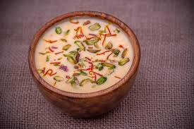

🥛 Basundi Recipe

Ingredients
- 1 liter full-fat milk
- 1/4 cup sugar (adjust to taste)
- 4–5 saffron strands (soaked in 1 tbsp warm milk)
- 1/2 tsp cardamom powder
- 2 tbsp chopped almonds and pistachios
- Optional: a few drops of rose water or kewra essence
Instructions
- Boil the milk in a heavy-bottomed pan, then simmer on low heat.
- Keep stirring and scraping the sides to prevent burning.
- Reduce the milk to almost half, then add sugar and mix well.
- Add saffron milk, cardamom powder, and chopped nuts.
- Simmer for 5–10 more minutes, then turn off the heat.
- Chill in the fridge before serving. Garnish with nuts before serving.
Serve With
- Poori or lightly sweetened puran poli
- As a dessert after a festive meal
💡 Tip: Stir constantly to avoid cream formation and burning at the bottom.